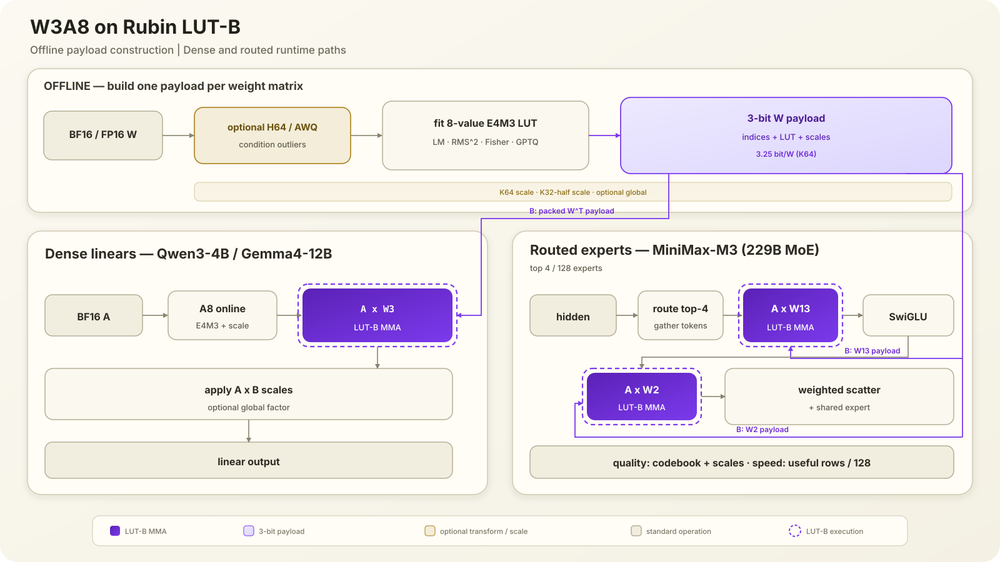
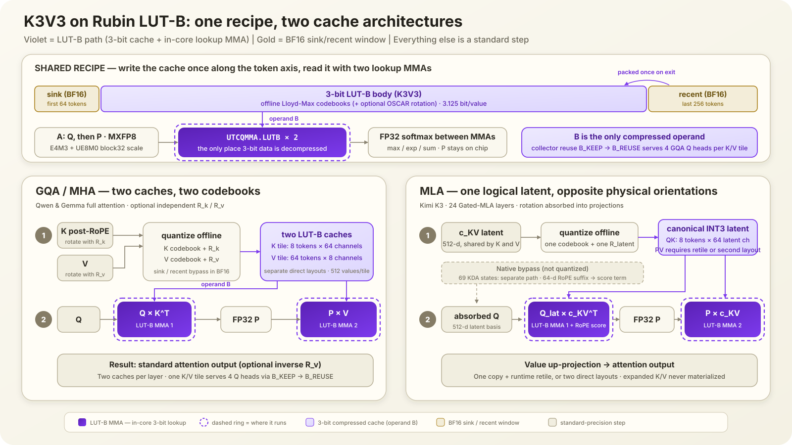

Can Vera Rubin run accurate 3-bit LLM inference?
We study one question: can Rubin's native LUT-B instruction run 3-bit model weights and 3-bit KV cache without destroying model quality?
Answer: yes—but only with the right quantizer. Calibrated non-uniform codebooks and scales keep the quality loss bounded. A naive 3-bit codebook can increase perplexity by thousands of times. The algorithm, not the bit width alone, decides whether INT3 works.
Rubin LUT-B
What the kernel does
A native decompress::lut::b MMA multiplies an E4M3 A tile by a compressed B tile [8]. Each B element is stored as a 3-bit index selecting one of eight E4M3 reconstruction values in Tensor Memory. Lookup and multiplication happen inside the tensor-core instruction, so the kernel never materializes a dense BF16 or FP16 B matrix.
How the kernel computes the product
The mathematical operation is still \(Y=A\cdot B\). For one K block, separate the small E4M3 numbers used by the MMA from the scales that restore their original magnitude:
In words: LUT-B multiplies the small E4M3 A values by the E4M3 values selected from the LUT. The result \(D\) has the right shape but not yet the original magnitude. Multiplying by the A scale, B scale, and optional global factor restores that magnitude before adding the partial to Y.
| Item | Where it lives | How it is used | Optional? |
|---|---|---|---|
3-bit index + 8-value LUT |
Stored in the offline B payload | Reconstructs the E4M3 B value inside LUT-B | No |
| \(s_A\) | Generated online for each A row and K block | Multiplies the MMA partial to undo A quantization | Used in W3A8/K3V3; otherwise \(s_A=1\) |
| \(s_B\) | Stored with each B tile, output row, and K block/half | Multiplies the MMA partial to restore weight/cache range | Recipe-dependent; otherwise \(s_B=1\) |
| \(g\) | One FP32 value per tensor | Multiplied once with the accumulated output | Optional; otherwise \(g=1\) |
- Tile A and B. One 128-thread CTA owns one M128×N8 output tile and traverses K in 64-element segments. A rows are quantized online to E4M3 with their UE8M0 block scales, while the B payload is already packed offline.
- Stage one K64 payload. The CTA copies the 256-byte native B image into shared memory, loads the matching eight-value LUT, and stages each thread's A fragment plus replicated LUT data in Tensor Memory. Synchronization makes the descriptors visible before issue.
- Issue and wait. One thread issues
tcgen05.mma…decompress::lut::b; hardware performs the 3-bit lookup and E4M3 multiply while accumulating FP32 D. The CTA commits the MMA to an mbarrier and waits before reading D from Tensor Memory. - Restore and accumulate. The kernel multiplies D by \(s_A\times s_B\), adds it to Y, and applies optional \(g\). The current correctness kernel performs these multiplies in the FP32 epilogue; a compatible block-scale MMA can apply the separable \(s_A\times s_B\) product inside the instruction.
The K=32 MMA shape is illegal for this LUT-B instruction. That is different from using K32 scale blocks inside a legal K=64 MMA.
- The current reference kernel uses the unscaled LUT-B instruction. To reproduce arbitrary per-row/per-half scales, it runs two masked K64 passes: one half of A is zero in each pass, and each FP32 partial receives its own half-scale.
- A block-scaled K64
block32MMA can instead apply two K32 scale blocks inside one K64 instruction. Its effective scale is separable:
Therefore a row-scale × column-scale layout that matches the hardware descriptor can preserve K32 granularity in one K64 MMA. Two passes are a property of our current general correctness realization, not a fundamental requirement of every two-K32 design.
Two challenges
- How to utilize the hardware efficiently. LUT-B decompresses only B, which constrains operand orientation. Its M tile has 128 rows, while batch-1 GQA or one routed expert may expose only a few useful rows. A production kernel must combine a compatible B-side schedule with request batching or expert gathering, overlap payload movement with MMA, and move separable scale products into the block-scaled instruction instead of reading every partial back in software.
- How to preserve accuracy at three bits. Eight reconstruction values must cover weight or KV distributions with severe outliers. The codebook, K64/K32 scale granularity, E4M3 A rounding, optional global factor, and calibration objective all move PPL/KL. The central algorithmic problem is choosing these pieces together without spending the byte savings on metadata or extra passes.
Our algorithm
Weight path
We pack static \(W^\top\) once and quantize each activation row to E4M3 online. The compared algorithms change the offline payload:
- Condition outliers with optional H64 or AWQ.
- Fit eight E4M3 values using Lloyd–Max [1,2], RMS² weighting, or Fisher-weighted SqueezeLLM [5].
- Optionally apply Hessian-guided GPTQ compensation [3] or alternate GPTQ with codebook refitting.
- Select K64, two-K32, and optional tensor-global scales.
- Pack indices/LUT/scales and execute one LUT-B GEMM per linear layer or routed expert.

KV path
We keep sensitive sink/recent tokens in BF16 and seal older Kᵀ and V once into LUT-B payloads:
- Fit per-layer Lloyd–Max codebooks [1,2]; optionally condition K/V with OSCAR [7].
- Quantize Q to E4M3 and execute Q×Kᵀ through LUT-B.
- Keep max, exponentiation, sum, and normalization in FP32.
- Quantize P to E4M3 and execute P×V through LUT-B.
- Merge the compressed-body result with the BF16 window.

TurboQuant [9] is a related learned-centroid KV baseline, but it is not relabelled as a Figure 2 result because its available measurements use a different runtime and evaluation protocol.
Experiment 1 — 3-bit weights
We compare 18 quantized configurations plus BF16 and A8 baselines across Qwen3-4B, Gemma4-12B, and MiniMax-M3 at 8K, 64K, and 128K. The question is whether algorithm choice can make native W3A8 usable.
What the compared algorithms do
- Lloyd–Max / uniform / NF3. Uniform spaces eight levels evenly; NF3 uses a fixed normal-inspired codebook; Lloyd–Max [1,2] learns eight centroids from each tile. This isolates whether fitting the codebook matters.
- RMS² / SqueezeLLM. RMS² weights reconstruction error by activation second moments. SqueezeLLM [5] instead uses diagonal Fisher information. Both change the codebook fit; neither is GPTQ compensation.
- GPTQ / inter-GPTQ. GPTQ [3] uses a block Hessian to push each rounding error into columns not yet quantized. Inter-GPTQ alternates this compensation sweep with refitting the eight-value codebook.
- H64 / AWQ / scale variants. H64 follows the rotated-quantization idea in QuaRot [6], spreading outliers with a signed Hadamard transform and applying the matching transform to A. AWQ [4] rescales activation channels and folds the inverse scale into weights; K64/two-K32/global variants change scale granularity.
Every reported quantized GEMM runs through the native Rubin LUT-B MMA.
Result: 3-bit weights are viable, but a naive codebook can be orders of magnitude worse.
Experiment 2 — 3-bit KV cache
Figure 2 compares five Qwen KV configurations (BF16 plus four compressed recipes) and three Kimi latent-cache configurations. It asks whether a fitted codebook and controlled scales can make native K3V3 accurate while reducing cache traffic.
What the KV algorithms do
- Window and sealing. Sink and recent tokens remain BF16. Older K/V are sealed once in 64-token chunks as 3-bit indices, layer-specific LUT values, and scales; decode never writes them again.
- Lloyd–Max codebooks. Each layer learns eight non-uniform values from calibration data [1,2], placing resolution where K/V values occur. Uniform levels waste codes on sparse tails and collapse PPL.
- OSCAR. A calibrated rotation and clipping rule [7] spreads outliers before fitting the codebook. It can improve some models, but adds transforms unless they are absorbed into adjacent projections.
- Native attention path. E4M3 Q multiplies compressed Kᵀ; max, exp, sum, and normalization stay FP32; E4M3 P then multiplies compressed V. Both cache reads use B-side LUT decompression.
Result: From PPL, 3-bit KV is practical when the codebook and scale are controlled. Uniform INT3 is not a usable baseline.
What speedup could W3A8 and K3V3 enable?
These are kernel roofline estimates, not end-to-end serving measurements. They separate the benefit of moving fewer bytes from the online cost of the more elaborate accuracy methods.
W3A8 weight-GEMM estimate
| Native weight path | Payload | Extra online work | Kernel implication |
|---|---|---|---|
| One-pass K64 LUT-B | 3.25 bit/W | None beyond A8 quantization | 2.49–4.35× Rubin BF16; 16.3–28.6× H100 BF16 at 40–70% LUT-B rate |
| LM / RMS² / GPTQ / SqueezeLLM / inter-GPTQ | Same K64 payload | Codebook, Fisher, and Hessian work is offline | Same one-pass envelope; byte ceilings are 4.92× Rubin and 32.3× H100 |
| H64 + K64 | 3.25 bit/W | Signed H64 transform on A | Base envelope minus the transform cost; often buys the largest accuracy gain |
| Two-K32 reference path | 3.375 bit/W | Current generic implementation uses two masked K64 passes | 2× MMA issue in the reference kernel; ≈10% wall-clock premium in the current native evaluation |
K64 block32 target |
Descriptor-dependent | Row scale × column scale inside one block-scaled MMA | Preserves two K32 scale blocks in one K64 MMA when the layout factorizes as required |
Folded AWQ and a tensor-global scale add no extra GEMM pass when the fold is supported. The current correctness kernel is not optimized, so this table describes the attainable kernel envelope rather than its present wall clock.
K3V3 attention estimate at 1M context
| Qwen3-4B attention path | KV / request | Attention-only tok/s | vs H100 BF16 |
|---|---|---|---|
| H100 · BF16 KV | 154.6 GB | 21.7 | 1.00× |
| Rubin · BF16 KV | 154.6 GB | 142.3 | 6.57× |
| Rubin · K3V3, LUT-B rate 40% | 30.2 GB | 353.7 | 16.3× |
| Rubin · K3V3, LUT-B rate 55% | 30.2 GB | 486.3 | 22.4× |
| Rubin · K3V3, LUT-B rate 70% | 30.2 GB | 619.0 | 28.6× |
| Rubin · K3V3 byte ceiling | 30.2 GB | 727.6 | 33.6× |
Qwen3-4B, 36 layers, GQA4, attention only. The model includes a 320-token BF16 sink/recent window, so the effective 1M cache uses 3.129 bit/value rather than exactly 3.125. These estimates exclude model weights, MLP, sampling, communication, and scheduling. Lloyd–Max is offline; OSCAR adds rotation/clipping unless absorbed into neighbouring projections.
Conclusion 1 — W3A8. Most “fancy” quality methods are offline and preserve the one-pass K64 kernel. H64 pays an A transform. Our general two-K32 reference pays a second pass, but a descriptor-matched row-scale × column-scale
block32kernel can retain K32 granularity in one K64 MMA.Conclusion 2 — K3V3. A fitted codebook and controlled scales can cut a 1M KV cache from 154.6 GB to 30.2 GB. Actual speed then depends on LUT-B rate and small-M scheduling, not on another dequantization pass.
References and implementation
- J. Max, “Quantizing for Minimum Distortion”, 1960.
- S. P. Lloyd, “Least Squares Quantization in PCM”, 1982.
- E. Frantar et al., “GPTQ: Accurate Post-Training Quantization for Generative Pre-trained Transformers”, ICLR 2023.
- J. Lin et al., “AWQ: Activation-aware Weight Quantization for LLM Compression and Acceleration”, MLSys 2024.
- S. Kim et al., “SqueezeLLM: Dense-and-Sparse Quantization”, ICML 2024.
- S. Ashkboos et al., “QuaRot: Outlier-Free 4-Bit Inference in Rotated LLMs”, NeurIPS 2024.
- Z. Zhou et al., “OSCAR: Offline Spectral Covariance-Aware Rotation for 2-bit KV Cache Quantization”, 2026.
- NVIDIA, PTX ISA 9.4 —
tcgen05.mmaand LUT decompression. - vLLM, TurboQuant centroid implementation and documentation.
Our native reference implementation, full context sweeps, and reproducibility details are in the technical report and the zhongzhu/oscar-int3-rubin-simulate source branch.